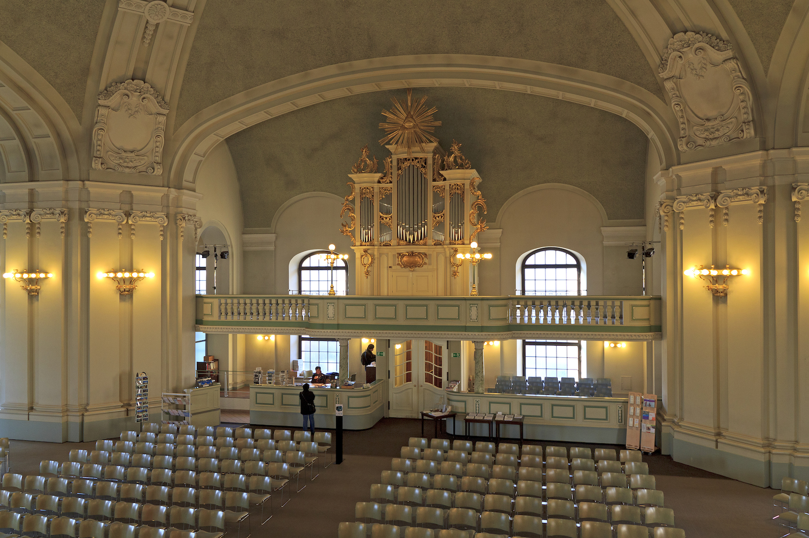

Hugenottenmuseum Berlin
Potsdam
Durch das Edikt von Potsdam, das der Große Kurfürst 1685 erlassen hatte, fanden in den Jahren darauf etwa 20 000 französische Glaubensflüchtlinge in Berlin und der Mark Brandenburg Aufnahme. Ihre Geschichte wird im Hugenottenmuseum anhand von Urkunden, Gemälden, Stichen, Büchern, Handschriften und Medaillen erzählt. Träger des Museums, das 1935 im Französischen Dom an Gendarmenmarkt eingerichtet wurde, ist das Konsistorium der Französischen Kirche zu Berlin. Die Ausstellung geht ausführlich auf die Gründe ein, die zur Flucht der Protestanten aus Frankreich führten, und zeichnet die Entstehung der französischen Siedlungen in der Mark Brandenburg nach. Deutlich wird, welchen Anteil die handwerklich gut ausgebildeten Einwanderer am Aufstieg Brandenburg-Preußens im 18. Jahrhundert hatten.
- bildergalerie
- kommende ausstellungen